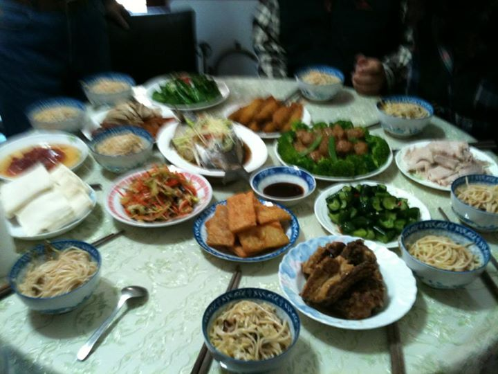
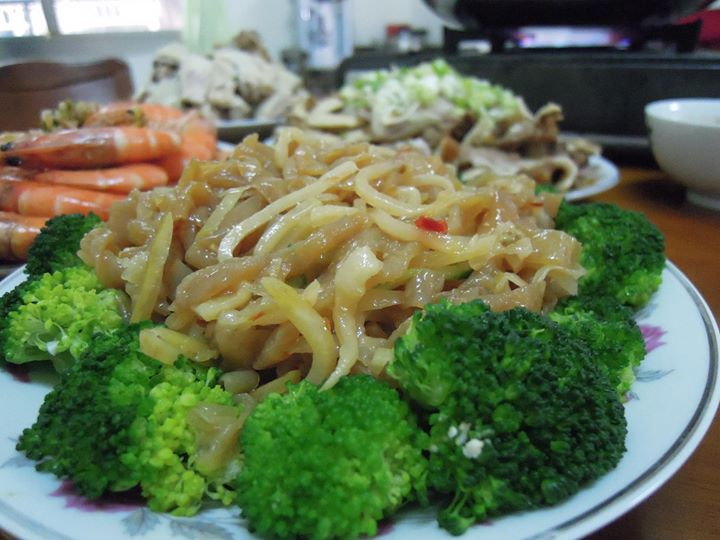
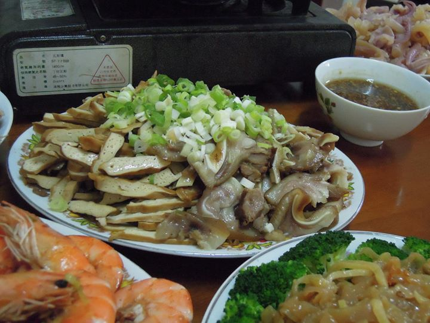
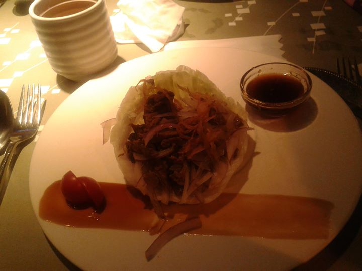
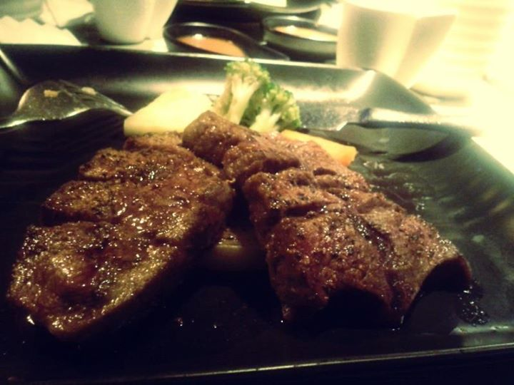

2013 青年Popo醬的的奇幻年夜飯

大家新年快樂！！ Btw 紅酒軟木塞爛掉了該如何是好壓XDD

今年是砂鍋魚頭style(嗝

其實是大前天晚上提早吃的團圓飯〜 今晚的年夜飯明天再po ^_^

陪我渡過接下來的假期!
<和媽媽妹妹煮到手都軟了XD
新年佳節愉快~~~" class="img-thumbnail">
加上沒入鏡的雞酒和火鍋，一共十道><和媽媽妹妹煮到手都軟了XD 新年佳節愉快~~~
"<" class="img-thumbnail">
只吃到一頓年夜飯，又沒有間好好拍照，這是我家的火鍋一角>"<

耶呼〜還是縮成同一張方便

不是娘家飯XD

初二的午餐，含各道菜特寫，若欲索取食譜請私訊XD

初二的午餐，含各道菜特寫，若欲索取食譜請私訊XD
 / / / <
也祝大家新年快樂~每天都有美食可以吃飽飽~~~^_____________^" class="img-thumbnail">
大年初二是我們家8人行的陶板屋小約會~牛肉沙拉和炸飯糰好好吃喔~這三天也太幸福了!!!I love my family!!!> / / / < 也祝大家新年快樂~每天都有美食可以吃飽飽~~~^_____________^
/ / / <
也祝大家新年快樂~每天都有美食可以吃飽飽~~~^_____________^" class="img-thumbnail">
大年初二是我們家8人行的陶板屋小約會~牛肉沙拉和炸飯糰好好吃喔~這三天也太幸福了!!!I love my family!!!> / / / < 也祝大家新年快樂~每天都有美食可以吃飽飽~~~^_____________^
 / / / <
也祝大家新年快樂~每天都有美食可以吃飽飽~~~^_____________^" class="img-thumbnail">
大年初二是我們家8人行的陶板屋小約會~牛肉沙拉和炸飯糰好好吃喔~這三天也太幸福了!!!I love my family!!!> / / / < 也祝大家新年快樂~每天都有美食可以吃飽飽~~~^_____________^